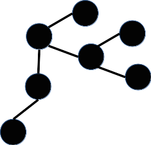

Usted
como experto ha sido invitado a evaluar, algunos de los
resultados del trabajo doctoral de Pablo A. Reyes G.
Esta página web tiene como objetivo evaluar qué tipo de
información y visualizaciones en conectividad estructural
cerebral le puden brindar un mayor apoyo bien sea en lo clínico
o en la investigación. Asi pues, se presentarán resultados de
las comparaciones grupales entre variantes de la demencia
frontotemporal, asi como también los resultados de un sujeto con
demencia frontotemporal.
Sabemos que su tiempo es muy valioso; dado esto le sugerimos que tome notas. Al finalizar usted puede dirigirse a este formulario para que registre sus comentarios. Agradecemos enormemente su colaboración. Cualquier duda por favor escriba a pabloreyesg@gmail.com Muestra
Los pacientes fueron seleccionados de la Clínica de Memoria de Intellectus y otras dependencias del Hospital Universitario San Ignacio. Los pacientes fueron diagnosticados bajo los criterios internacionales de Raskovsky y Gorno Tempini por consenso de expertos. |
Adquisición y Análisis Adquisición: Se usó un equipo phillips Achieva de 3T. Las imágenes de difusión de tensores tuvieron un beta de 1000 y 32 gradientes. Estimación del modelo tensorial fue llevado a cabo con el software CAMINO diffusion MRI toolkit. En este trabajo se contempló unicamente una metodología de conectividad estructural total del cerebro; la conectividad estructural total fue realizada con el uso de tractografía determinística y probabilística. En ambas aproximaciones de tractografía se usó medidas de anisitropía fraccional y difusividad media. Para la conectividad global se contempló como semillas las etiquetas de el atlas AAL, pero también se contemplaron 8 atlas diferentes a AAL. Los grupos de pacientes fueron comparados por medio de la metodología de Network Basic Statistic (NBS), esta metodología usa estadística no paramétrica de permutaciones y se estableció para todas las comparaciónes un número de 8000 permutaciones con un valor p de 0.001. Un segundo análisis fue realizado sobre las medidas topológicas de las redes estructurales. En este apartado se uso un análisis de varianza con correcciones múltiples para establecer las diferencias entre los grupos estudiados. Una descripción más amplia de la muestra y de la metodología puede ser encontrada en la siguiente publicación Reyes, P., Ortega-Merchan, M. P., Rueda, A., Uriza, F., Santamaria-García, H., Rojas-Serrano, N., … Matallana, D. (2018). Functional Connectivity Changes in Behavioral, Semantic, and Nonfluent Variants of Frontotemporal Dementia. Behavioural Neurology, 2018, 1–10. https://doi.org/10.1155/2018/9684129 Resultados Se obtuvieron dos tipos de resultados. A) Diferencias en la conectividad estructural entre las variantes. B) Diferencias en métricas de conectividad estructural entre las variantes. Usted verá los resultados de la siguiente manera
|
|
|
|
Nivel Grupal |
Nivel Invididual |
En este nivel se muestran los resultados de comparar la conectividad estructural entre las subvariantes de la demencia frontotemporal, bien sean entre las mismas variantes o con controles. |
Se muestran comparaciones entre el sujeto vs el grupo (haga click en la visualizacion que le interese) Cerebro trasludico, Circular, Matriz |
Nivel Grupal |
Nivel Invididual |
|  En este nivel se muestran los resultados de comparar la conectividad estructural entre las subvariantes de la demencia frontotemporal, bien sean entre las mismas variantes o con controles. |
Se muestran comparaciones entre el sujeto vs el grupo |
Nivel Grupal |
Nivel Invididual |
En este nivel se muestran los resultados de comparar la conectividad estructural entre las subvariantes de la demencia frontotemporal, bien sean entre las mismas variantes o con controles. |
Se muestran comparaciones entre el sujeto vs el grupo |
Página web y resultados por Pablo A. Reyes G.